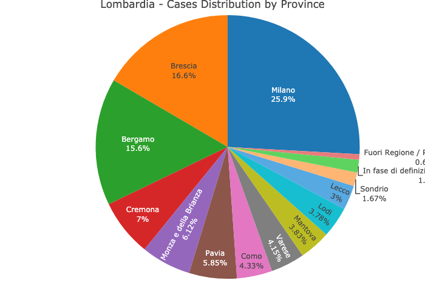

The covid19italy R package provides a tidy format dataset of the 2019 Novel Coronavirus COVID-19 (2019-nCoV) pandemic outbreak in Italy. The package includes the following three datasets:
-
italy_total- daily summary of the outbreak on the national level -
italy_region- daily summary of the outbreak on the region level -
italy_province- daily summary of the outbreak on the province level
More information about the package datasets available here, and supporting dashboard available here.
Data source: Italy Department of Civil Protection
Installation
You can install the released version of covid19italy from CRAN with:
install.packages("covid19italy")
Or, install the most recent version from GitHub with:
# install.packages("devtools") devtools::install_github("RamiKrispin/covid19Italy")
Data refresh
While the covid19italy CRAN version is updated every month or two, the Github (Dev) version is updated on a daily bases. The update_data function enables to overcome this gap and keep the installed version with the most recent data available on the Github version:
library(covid19italy) update_data()
Note: must restart the R session to have the updates available
Usage
data(italy_total) head(italy_total) #> date hospitalized_with_symptoms intensive_care total_hospitalized #> 1 2020-02-24 101 26 127 #> 2 2020-02-25 114 35 150 #> 3 2020-02-26 128 36 164 #> 4 2020-02-27 248 56 304 #> 5 2020-02-28 345 64 409 #> 6 2020-02-29 401 105 506 #> home_confinement cumulative_positive_cases daily_positive_cases recovered #> 1 94 221 0 1 #> 2 162 311 90 1 #> 3 221 385 74 3 #> 4 284 588 203 45 #> 5 412 821 233 46 #> 6 543 1049 228 50 #> death positive_clinical_activity positive_surveys_tests cumulative_cases #> 1 7 NA NA 229 #> 2 10 NA NA 322 #> 3 12 NA NA 400 #> 4 17 NA NA 650 #> 5 21 NA NA 888 #> 6 29 NA NA 1128 #> total_tests total_people_tested #> 1 4324 NA #> 2 8623 NA #> 3 9587 NA #> 4 12014 NA #> 5 15695 NA #> 6 18661 NA
Plotting the active cases distribution
library(plotly) plot_ly(data = italy_total, x = ~ date, y = ~home_confinement, name = 'Home Confinement', fillcolor = '#FDBBBC', type = 'scatter', mode = 'none', stackgroup = 'one') %>% add_trace( y = ~ hospitalized_with_symptoms, name = "Hospitalized with Symptoms", fillcolor = '#E41317') %>% add_trace(y = ~intensive_care, name = 'Intensive Care', fillcolor = '#9E0003') %>% layout(title = "Italy - Distribution of Active Covid19 Cases", legend = list(x = 0.8, y = 0.9), yaxis = list(title = "Number of Cases"), xaxis = list(title = "Source: Italy Department of Civil Protection"))

Plotting the daily cases distribution
plot_ly(data = italy_total, x = ~ date, y = ~ cumulative_positive_cases, name = 'Active', fillcolor = '#1f77b4', type = 'scatter', mode = 'none', stackgroup = 'one') %>% add_trace( y = ~ death, name = "Death", fillcolor = '#E41317') %>% add_trace(y = ~recovered, name = 'Recovered', fillcolor = 'forestgreen') %>% layout(title = "Italy - Distribution of Covid19 Cases", legend = list(x = 0.1, y = 0.9), yaxis = list(title = "Number of Cases"), xaxis = list(title = "Source: Italy Department of Civil Protection"))

Cases distribution by region
italy_region %>% filter(date == max(date)) %>% select(region_name, cumulative_positive_cases, recovered, death, cumulative_cases) %>% arrange(-cumulative_cases) %>% mutate(region = factor(region_name, levels = region_name)) %>% plot_ly(y = ~ region, x = ~ cumulative_positive_cases, orientation = 'h', text = ~ cumulative_positive_cases, textposition = 'auto', type = "bar", name = "Active", marker = list(color = "#1f77b4")) %>% add_trace(x = ~ recovered, text = ~ recovered, textposition = 'auto', name = "Recovered", marker = list(color = "forestgreen")) %>% add_trace(x = ~ death, text = ~ death, textposition = 'auto', name = "Death", marker = list(color = "red")) %>% layout(title = "Cases Distribution by Region", barmode = 'stack', yaxis = list(title = "Region"), xaxis = list(title = "Number of Cases"), hovermode = "compare", legend = list(x = 0.65, y = 0.9), margin = list( l = 20, r = 10, b = 10, t = 30, pad = 2 ))

Cases distribution by province for Lombardia region
italy_province %>% filter(date == max(date), region_name == "Lombardia") %>% plot_ly(labels = ~province_name, values = ~total_cases, textinfo="label+percent", type = 'pie') %>% layout(title = "Lombardia - Cases Distribution by Province") %>% hide_legend()
